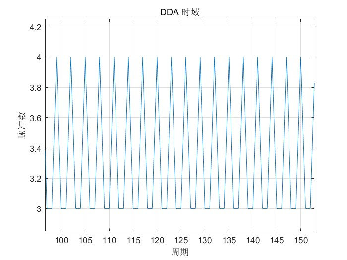
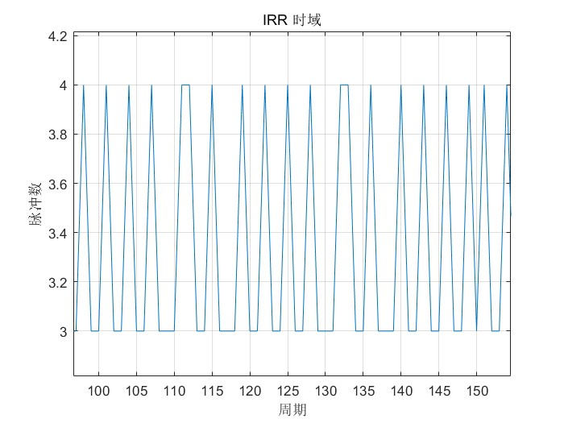
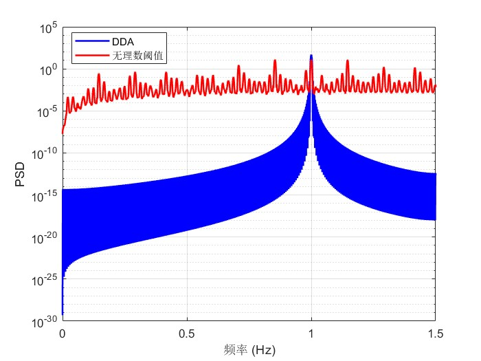

用无理数阈值法解决伺服余数插补极限环抖动
1. 匀速插补出的速度波动
在运动控制中，我们常遇到这样的场景：
- 指令要求每秒下发 10 个位置脉冲。
- 但位置环控制周期是 3Hz。
于是每个周期理论上应该下发 10/3 = 3.333... 个脉冲。但硬件只能下发整数个脉冲，于是我们不得不进行取整。最常见的做法是”余数累加溢出法”（DDA），即：
- 累加小数部分
0.333， - 当累加值 ≥ 1 时，下发 4 个脉冲，并减去 1；
- 否则下发 3 个脉冲。
结果就是经典的序列：
3,3,4,3,3,4,3,3,4,3,3,4,3,3,4,3,3,4…
这种 周期性的速度脉动 会在 1Hz 基频处产生一个尖锐的激励力，很容易激起机械共振，在工件表面留下纹路，或在低速时产生肉眼可见的抖动。
为什么调PID没用？ 因为这不是控制器的增益问题，而是量化器（Quantizer）本身引入的极限环（Limit Cycle）——系统状态被迫在一个固定的周期轨道上运行，无法收敛到稳定点。
2. 经典DDA的缺点：阈值是固定的
余数累加溢出法(DDA)的数学模型很简单：
1 | e(k) = e(k-1) + frac |
这里的 1.0 是一个固定阈值。误差 e(k) 每拍增加一个固定步长 frac，匀速撞向这个不变的墙。只要 frac 是有理数（比如 1/3），那么撞墙的时间间隔就是固定的（3拍），产生固定的基频。
这本质上是一个极限环：反馈的误差迫使系统以固定的节奏跳变。
3. 核心思想：让阈值随机变化
如果我们把固定阈值改成一个随时间变化的阈值，而且这个变化是非周期的，那么”撞墙”的时间间隔就不再固定，极限环就被打破了。
具体做法：
- 引入一个动态阈值
q(k)，它在[0, 1)区间内不断旋转：
其中
α是一个无理数，如黄金分割比(√5−1)/2 ≈ 0.6180339887。在每个周期，我们计算误差累加
e_star = e(k-1) + frac。- 触发条件不再是
e_star >= 1.0，而是：
- 如果成立，则输出
int_part + 1，并将e减去 1.0（消耗掉一个单位）；否则输出int_part。
物理直观：以前是”一个人匀速冲向固定终点线”，现在是”这个人去追一个在前方同样匀速跑动的移动靶”。如果 α 是无理数，那么移动靶永远不会回到同一个位置，导致”追上”的时刻（即输出 +1 的事件）永不重复，从根源上消除了周期成分。
4. 为什么任意无理数都行？
这里依赖一个深刻的数论定理：Weyl 等分布定理。
Weyl 定理：对于任意无理数
α，序列{k·α}的小数部分在[0,1)上稠密且均匀分布。
这意味着无论你选择 α = 0.618、0.414（√2−1）还是 0.14159（π的尾数），只要它是无理数，阈值 q(k) 就会在单位区间上永不重复地遍历，从而保证”超车事件”（输出 +1）的出现时刻没有固定的周期。
唯一不能选的：有理数（如 0.5、0.25）。因为有理数会在有限步后循环，阈值一旦循环，极限环就会卷土重来。
5. 为什么工程中偏爱黄金分割 0x9E3779B9？
虽然任意无理数都有效，但嵌入式工程师最常用的是 黄金分割比的32位定点表示：
1 |
原因是三距离定理（Three Gap Theorem）：黄金分割比是所有无理数中”最无理”的（其连分数全是1），这使得阈值点在圆周上分布得最快最均匀，没有大的空隙。算法在启动后的最初几个周期内就能迅速达到”打散”效果，而其他无理数（如√2）可能需要更长的预热时间。
6. 完整的算法流程
1 | %% 对比仿真：标准 DDA vs 无理数阈值法（纯浮点数，无定点数） |
注意：窗口补偿（nextX_comp）是保证长期位置精度的关键。即使中间因为阈值抖动而瞬时多发了或少发了脉冲，每个窗口结束时都会将差值累加，计算和指令之间的差值，作为下一个周期的补偿值。这样长期累积误差永远为零。
7. 效果对比（MATLAB 仿真）
我们以 X=10, N=3 为例（即每个窗口总脉冲100，拆成9拍，整数部分3，小数部分1/3≈0.333）。
7.1 时域序列
标准 DDA：呈现严格的 3,3,4（每个窗口固定在第3拍多1个），周期性明显。

无理数阈值法：+1 的位置在窗口内无规则跳动（有时在第2拍，有时在第1拍，等等），没有固定节拍。

7.2 频谱分析（功率谱密度）
DDA：在 1Hz（对应窗口周期）处有尖锐的峰值，同时存在多个谐波。这就是极限环的频域特征。
无理数法：1Hz 及谐波处的尖峰完全消失，能量被展宽成平坦的宽带噪声。这意味着电机感受到的激励力是宽谱的，机械低通滤波特性可以将其平滑吸收。
